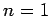

Inhalt Index DeskTop Bronstein

 Differentialrechnung Differentiation von Funktionen einer Veränderlichen Hauptsätze der Differentialrechnung
Differentialrechnung Differentiation von Funktionen einer Veränderlichen Hauptsätze der Differentialrechnung


Wenn eine Funktion y = f(x) im Intervall [a, a +h] stetig ist und dort stetige Ableitungen bis einschließlich der Ordnung n-1 besitzt und wenn im Innern des Intervalls noch die n-te Ableitung existiert, dann gilt die TAYLOR-Formel oder TAYLOR-Entwicklung
| (6.31) |
mit . Die Größe h kann positiv oder negativ sein. Der Mittelwertsatz der Differentialrechnung (6.29b) ist ein Spezialfall dieser TAYLOR-Formel für .